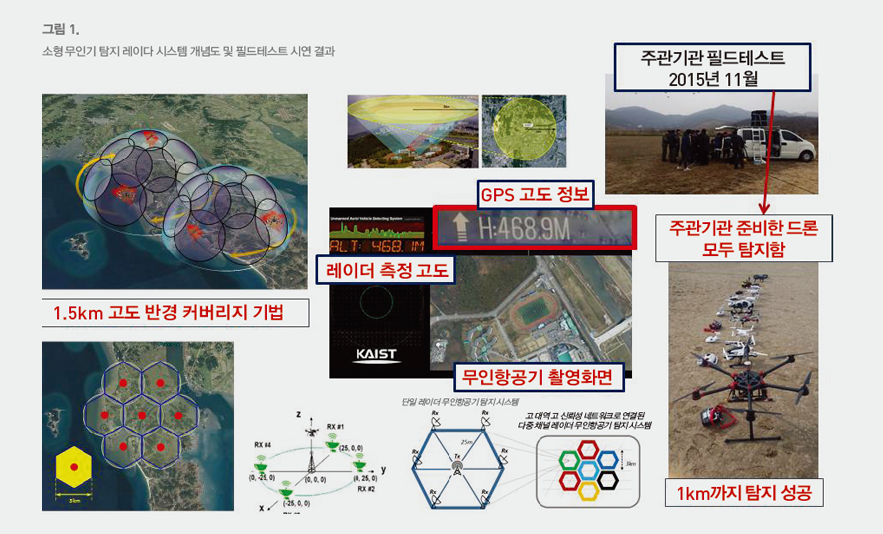

Top 10
Top 10
KAIST RESEARCH ACHIEVEMENTS
Micro Chained Radar System for detecting small UAVs
School of Electrical EngineeringㆍSchool of Computing
Soontae KimㆍDong-Soo Han
ㆍSeong-Ook ParkㆍJoohwan Chun
Summary
The technology of small-scale Unmanned Airborne Vehicles (UAVs) is progressing rapidly. Small UAVs and drones are not easy to detect as the traditional radar systems. The concept of micro-chained radar system is proposed, and demonstrated to accurately detect these small UAVs. Experimental results detect small UAVs and succeeded in extracting the necessary information to detect, classify, locate, and potentially even take control of UAVs that pose a threat. The proposed radar is very useful to detect small UAV which is a malicious individual trying to harm others, those operating UAVs have the potential to disrupt public safety.
R&D Report
Unmanned aerial vehicles (UAVs), commonly known as drones, are difficult to detect using conventional radar systems. In this research, a precise radar system that can detect and identify small UAVs has been developed. Researchers succeeded in detecting them at ranges up to 1 km and extracting information of interest such as velocity and location. It is expected to improve technological readiness and achieve global competitiveness in the radar industry.
Recently, North Korea has deployed a fleet of indigenous small UAVs. As the North Korean military poses a serious threat to the Republic of Korea (ROK), particular attention should be given to surveillance systems. The ROK Army and Air Force are currently using a low-altitude surveillance radar system that has difficulty in tracking small UAVs and has limitations imposed by mountainous terrain of ROK. For this reason, several experiments were conducted using other radars imported from the UK and Israel but all failed. It is therefore necessary to develop an improved radar system whose resolution and sensitivity are high enough to accurately detect small UAVs.
Researchers have developed a 4-channel radar system for the detection of small UAVs with our own technologies. It can detect UAVs having little radar cross section (0.03m2) whereas those of an existing radar system of the ROK army are about 2.0m2 , which means the detection performance is improved greatly (60 times). Also, it is possible to identify UAVs using the discrepancy compared to birds and other clutters. The development of the radar system includes fabricating Ku-band antennas, designing RF circuitry and its synchronization, and implementing a tracking algorithm and real-time data processing. This system has 1 transmitter in the center and 4 receivers in the four cardinal directions to find out the exact location of the target. This optimum placement forms conical beam patterns and determines the range of air surveillance. Researchers succeeded in enhancing the overall performance of the system by utilizing digital signal processing. Not only has the stability and dynamic range of the system been improved, but the size of the system has been smaller and the cost has also been reduced compared to analog-based systems. This radar system has a bandwidth of 150 MHz and the radial resolution is 1 m. Researchers have a number of experiments to verify its performance. During both trials, it successfully detected and tracks all eleven various drones prepared.

Fig 1. Schematic diagram of small UAV detection
radar system and field test results
This radar system can be used to guard the Military Demarcation Line and key national infrastructure as one of core technologies for the national security. As civil drones are increasingly being used, it is possible to apply the system for civilian demands.
Research Funding
ㆍThis research was supported by KAIST through the Micro-chained Radar Project.
Research Outcomes
ㆍDomestic patent : 10-2015-0078711, Frequency modulated continuous wave chain radar system and unmanned aerial vehicle detecting method
ㆍInternational patent : 14626076, Apparatus and method for measuring precipitation in the atmosphere using K-band frequency-modulated continuous wave (FMCW)weather radar sytem